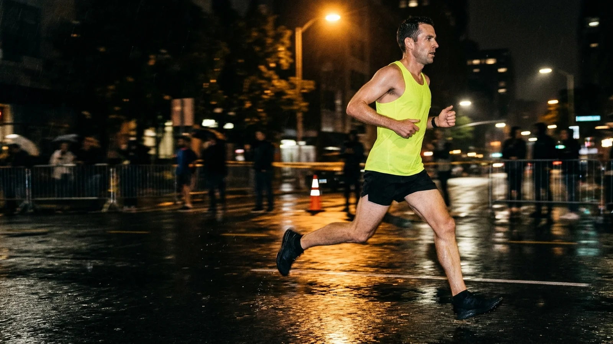
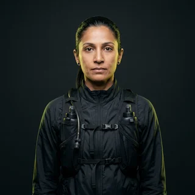

0262
Mile-level task assignment
Each mile is a ticket with an owner, a due pace and dependencies. Mile 14 is blocked by Mile 13. We did not make the rule. We made it visible.
Default ownerLeft Leg
Taper breaks your marathon into mile-level work items, assigns each one to a body part, and escalates when Morale misses a standup. The finish line is now a deliverable.

Left Leg, Right Leg, Lungs and Morale each own a share of the race. Taper gives them tickets, due paces and a shared place to explain themselves.
Each mile is a ticket with an owner, a due pace and dependencies. Mile 14 is blocked by Mile 13. We did not make the rule. We made it visible.
A 90-second async standup at every water table. What did you run, what will you run, what is blocking you. Most runners write "hamstring". We file it.
Ten toenails, ten projects, one status board. On Track, At Risk, Off Track and Detached. Finance gets a weekly digest.
Move miles to Done, log a blocker, reassign a toenail. It is the full product, minus the running.
4,118 finishers have closed their race in Taper. 312 closed it as Won't Fix. We count both.
"I used to just run. Now I run with visibility. My left quad has been tagged in eleven comments since Saturday."
"My coach and I have not spoken since March. We communicate through threads on Mile 22. It is the healthiest the relationship has been."

"Taper flagged my right big toenail as At Risk eleven days before it left the organization. Nobody else saw it coming."
Every plan includes Lungs at no extra cost. Morale is a guest seat and cannot approve anything.